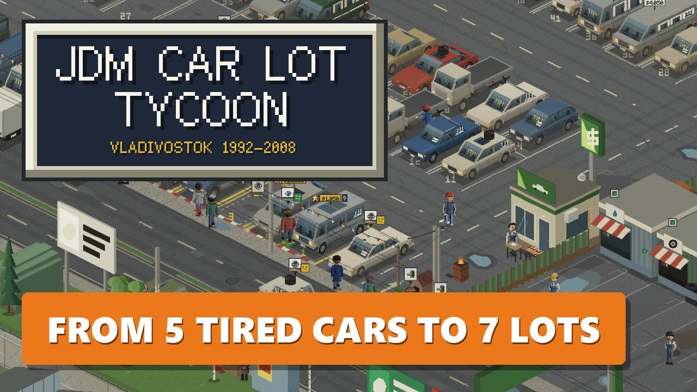

The 72 hours end on Monday at 18:30 Vladivostok time. Both games are in. This is the last of three posts (day 1, day 2), and the shortest, because on day three the work stopped being about making the games and started being about getting them to people.
Each game has its own trailer now, cut from Monday’s builds.


Pirates of the Japan Sea
He played it twice in the small hours of Monday and gave up the tutorial both times. The first time there was too much to read. The second time the lesson said "beat a pirate" and he could not tell which ship was the pirate. His notes were short: "less text, more icons and flair".
So every ship now has a colour on the water: green for yours, yellow for neutral, red for whoever wants you dead. Lesson cards are one sentence each, with a seal, and a stamp when a step is done. Rows in the town became a drawing, a name and a price.
Then he asked what prizes are for. Now a ship you take joins your fleet. Each one costs wages, can be given an officer, and can be laid up in your cove when you cannot afford her.
The last thing he did not like was the edge of the world. Where the detailed coast met the rough map of the whole sea there was a visible seam. His answer was to turn the far land into something else entirely: land you have not explored is drawn as a hand-made chart, with ink shores, paper and form lines for the hills.
JDM Car Lot Tycoon
He called the tutorial the most important task of the day and wrote out how it should go. Now the game starts at the port with an empty screen and the clock stopped. The first ship comes in, you tap each car off the ramp, and parts of the interface appear one at a time, as you need them.
In the browser he found the menus made for a phone, "huge", and the text "very very small" once they were fixed. There is a desktop layout now. And a third place to spend money: your own home on the shore of the Amur Bay, which goes from a rented room to a house by the sea over seventeen years.
And it is a product now. The first lot is free. The rest is one purchase, no ads. He set the price in four words: "4usd it is". Then he bought it on his own phone to check that it works, and said "Lets Go".
Where the machine failed today
- It wrote a tutorial nobody could finish. Every check passed. Only a person found out the pirate looked like everyone else.
- It told iPhone users to look for the game on Google Play. One store screenshot for Apple still carried that line from the Play set. Caught before review.
- It broke its own Android build by packing the splash picture twice, which made the signing tool refuse the file.
- The ground vanished. After you visited your home, the lot and the port were drawn with no ground under them.
- It still writes too much. On day one and again on day three the human’s note was the same: fewer words.
Seventy-two hours in numbers
- Lines of code written by the human: none.
- Pirates of the Japan Sea: 105 saved versions, about 22,400 lines of game code, 24 checks.
- JDM Car Lot Tycoon: build 60, 164 car models, seventeen years, English and Russian.
- Trailers: two for the games and two for the hackathon.
Play them
Pirates of the Japan Sea, for a computer with a keyboard and mouse:
- itch.io, free in the browser
- MyIndie, the hackathon page
- Epic Games Store: the store page is being set up
JDM Car Lot Tycoon, for a phone or a computer:
- Google Play, the first lot free, the full game one purchase
- iPhone: the open beta on TestFlight while the App Store version waits to be sent for review
- itch.io, the first lot in the browser
- MyIndie, the hackathon page
The judges score the entries until 26 November. Whatever they decide, both games keep going, and the goal from day one has not changed: release both, properly, in as many places as will take them.
We build in the open and change things from what people tell us, and these three posts are proof of that. If something in either game feels wrong, tell us: contact@goldenharbourgames.com.